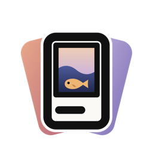
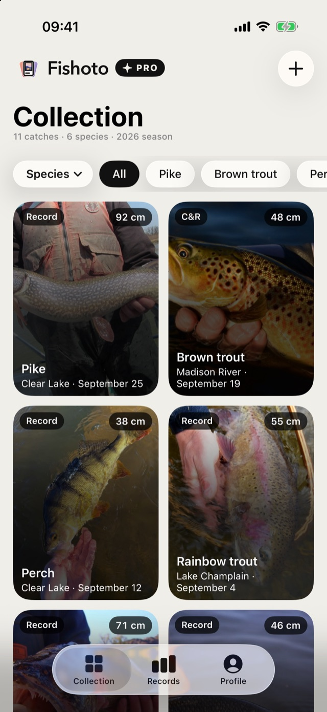
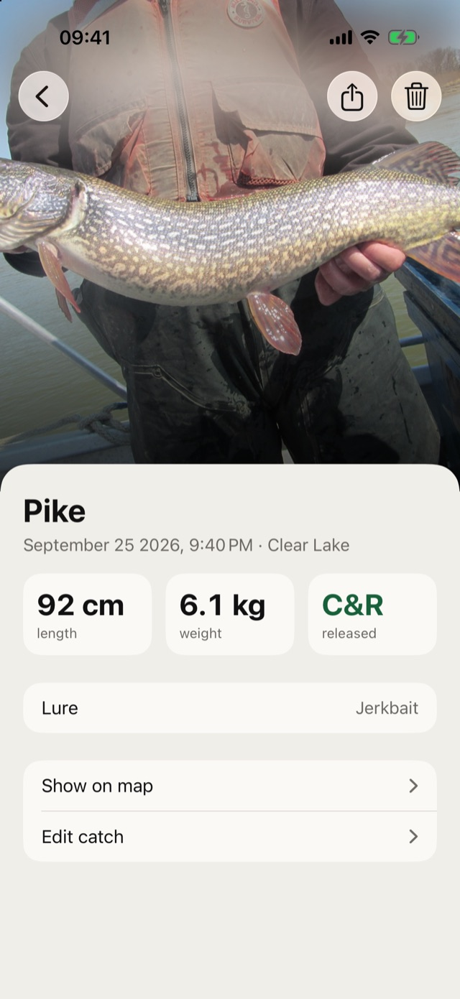
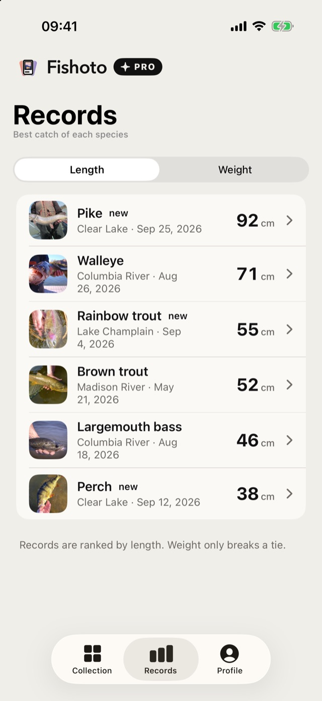
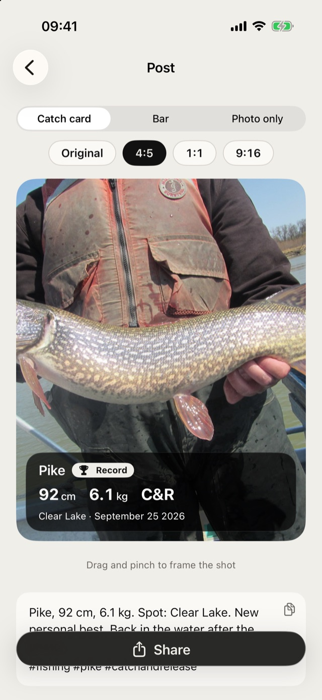
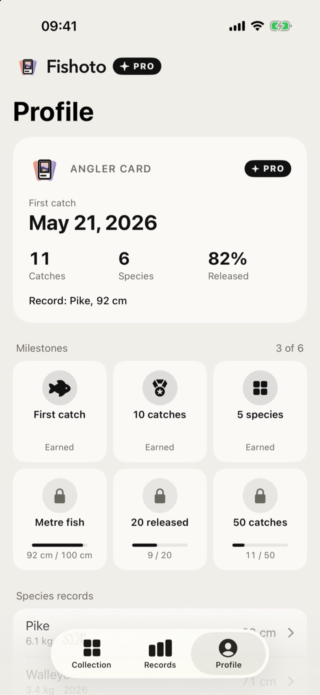

A fishing log that remembers the size, the spot and the lure.
Remember last year's personal best? Where it bit, what it took, how big it was? Fishoto does.

Every catch in one place
Photo, species, length, weight, spot and lure, saved in seconds and easy to find later.

The fish and the story behind it
Each catch keeps its date, place, method and the notes you want to remember.

Watch your personal bests grow
Your biggest fish of every species, with the new ones marked as they come.

Share your best catches
Turn a catch into a ready post with the photo, the numbers and a caption.

Get to know your fishing
See which species, spots and lures work best for you.
Yours only.
No sign-up, no ads, no tracking. Your catches sync through your own iCloud and stay visible only to you.
Free to download. Fishoto Pro (monthly or yearly) gives you unlimited catches and posts without the Fishoto strip.